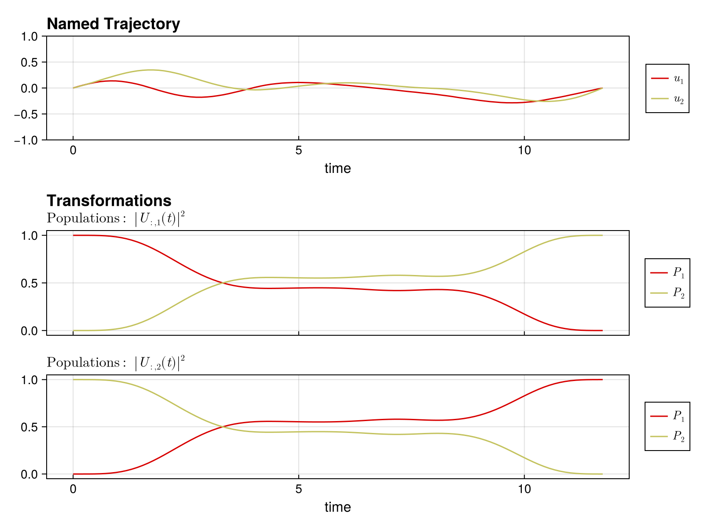

Quickstart Guide
This guide shows you how to set up and solve a quantum optimal control problem in Piccolo.jl. We'll synthesize a single-qubit X gate.
The Problem
We want to find control pulses that implement an X gate on a single qubit with system Hamiltonian:
\[H(t) = \frac{\omega}{2} \sigma_z + u_1(t) \sigma_x + u_2(t) \sigma_y\]
using PiccoloStep 1: Define the Quantum System
First, we define our quantum system by specifying the drift Hamiltonian (always-on), the drive Hamiltonians (controllable), and the bounds on control amplitudes.
# Drift Hamiltonian: qubit frequency term
H_drift = 0.5 * PAULIS[:Z]
# Drive Hamiltonians: X and Y controls
H_drives = [PAULIS[:X], PAULIS[:Y]]
# Maximum control amplitudes
drive_bounds = [1.0, 1.0]
# Create the quantum system
sys = QuantumSystem(H_drift, H_drives, drive_bounds)QuantumSystem: levels = 2, n_drives = 2Step 2: Create an Initial Pulse
We need an initial guess for the control pulse. ZeroOrderPulse represents piecewise constant controls.
# Time parameters
T = 10.0 # Total gate duration
N = 100 # Number of timesteps
# Create time vector
times = collect(range(0, T, length = N))
# Random initial controls (scaled by drive bounds)
initial_controls = 0.1 * randn(2, N)
# Create the pulse
pulse = ZeroOrderPulse(initial_controls, times)ZeroOrderPulse{DataInterpolations.ConstantInterpolation{Matrix{Float64}, Vector{Float64}, Vector{Union{}}, Float64}}(DataInterpolations.ConstantInterpolation{Matrix{Float64}, Vector{Float64}, Vector{Union{}}, Float64}([-0.19770097589972205 0.011590742519884458 … -0.026241978777701482 0.04993470949325754; -0.029018195168309918 -0.04899050687278563 … 0.032188827040722325 0.20482941245343841], [0.0, 0.10101010101010101, 0.20202020202020202, 0.30303030303030304, 0.40404040404040403, 0.5050505050505051, 0.6060606060606061, 0.7070707070707071, 0.8080808080808081, 0.9090909090909091 … 9.090909090909092, 9.191919191919192, 9.292929292929292, 9.393939393939394, 9.494949494949495, 9.595959595959595, 9.696969696969697, 9.797979797979798, 9.8989898989899, 10.0], Union{}[], nothing, :left, DataInterpolations.ExtrapolationType.None, DataInterpolations.ExtrapolationType.None, FindFirstFunctions.Guesser{Vector{Float64}}([0.0, 0.10101010101010101, 0.20202020202020202, 0.30303030303030304, 0.40404040404040403, 0.5050505050505051, 0.6060606060606061, 0.7070707070707071, 0.8080808080808081, 0.9090909090909091 … 9.090909090909092, 9.191919191919192, 9.292929292929292, 9.393939393939394, 9.494949494949495, 9.595959595959595, 9.696969696969697, 9.797979797979798, 9.8989898989899, 10.0], Base.RefValue{Int64}(1), true), false, true), 10.0, 2, :u, [0.0, 0.0], [0.0, 0.0])Step 3: Define the Goal via a Trajectory
A UnitaryTrajectory combines the system, pulse, and target gate.
# Target: X gate
U_goal = GATES[:X]
# Create the trajectory
qtraj = UnitaryTrajectory(sys, pulse, U_goal)UnitaryTrajectory{ZeroOrderPulse{DataInterpolations.ConstantInterpolation{Matrix{Float64}, Vector{Float64}, Vector{Union{}}, Float64}}, SciMLBase.ODESolution{ComplexF64, 3, Vector{Matrix{ComplexF64}}, Nothing, Nothing, Vector{Float64}, Vector{Vector{Matrix{ComplexF64}}}, Nothing, SciMLBase.ODEProblem{Matrix{ComplexF64}, Tuple{Float64, Float64}, true, SciMLBase.NullParameters, SciMLBase.ODEFunction{true, SciMLBase.FullSpecialize, SciMLOperators.MatrixOperator{ComplexF64, Matrix{ComplexF64}, SciMLOperators.FilterKwargs{Nothing, Val{()}}, SciMLOperators.FilterKwargs{Piccolo.Quantum.Rollouts.var"#update!#_construct_operator##2"{QuantumSystem{Piccolo.Quantum.QuantumSystems.var"#37#38"{SparseArrays.SparseMatrixCSC{ComplexF64, Int64}, Vector{SparseArrays.SparseMatrixCSC{ComplexF64, Int64}}, Int64}, Piccolo.Quantum.QuantumSystems.var"#39#40"{Vector{SparseArrays.SparseMatrixCSC{Float64, Int64}}, Int64, SparseArrays.SparseMatrixCSC{Float64, Int64}}, @NamedTuple{}, Vector{DriftTerm{SparseArrays.SparseMatrixCSC{ComplexF64, Int64}, Returns{Float64}, Returns{Float64}}}, SparseArrays.SparseMatrixCSC{ComplexF64, Int64}}}, Val{()}}}, LinearAlgebra.UniformScaling{Bool}, Nothing, Nothing, Nothing, Nothing, Nothing, Nothing, Nothing, Nothing, Nothing, Nothing, Nothing, Nothing, typeof(SciMLBase.DEFAULT_OBSERVED), Nothing, Piccolo.Quantum.Rollouts.PiccoloRolloutSystem{Union{Int64, AbstractVector{Int64}, CartesianIndex, CartesianIndices}}, Nothing, Nothing}, Base.Pairs{Symbol, Vector{Float64}, Nothing, @NamedTuple{tstops::Vector{Float64}}}, SciMLBase.StandardODEProblem}, OrdinaryDiffEqLinear.MagnusAdapt4, OrdinaryDiffEqCore.InterpolationData{SciMLBase.ODEFunction{true, SciMLBase.FullSpecialize, SciMLOperators.MatrixOperator{ComplexF64, Matrix{ComplexF64}, SciMLOperators.FilterKwargs{Nothing, Val{()}}, SciMLOperators.FilterKwargs{Piccolo.Quantum.Rollouts.var"#update!#_construct_operator##2"{QuantumSystem{Piccolo.Quantum.QuantumSystems.var"#37#38"{SparseArrays.SparseMatrixCSC{ComplexF64, Int64}, Vector{SparseArrays.SparseMatrixCSC{ComplexF64, Int64}}, Int64}, Piccolo.Quantum.QuantumSystems.var"#39#40"{Vector{SparseArrays.SparseMatrixCSC{Float64, Int64}}, Int64, SparseArrays.SparseMatrixCSC{Float64, Int64}}, @NamedTuple{}, Vector{DriftTerm{SparseArrays.SparseMatrixCSC{ComplexF64, Int64}, Returns{Float64}, Returns{Float64}}}, SparseArrays.SparseMatrixCSC{ComplexF64, Int64}}}, Val{()}}}, LinearAlgebra.UniformScaling{Bool}, Nothing, Nothing, Nothing, Nothing, Nothing, Nothing, Nothing, Nothing, Nothing, Nothing, Nothing, Nothing, typeof(SciMLBase.DEFAULT_OBSERVED), Nothing, Piccolo.Quantum.Rollouts.PiccoloRolloutSystem{Union{Int64, AbstractVector{Int64}, CartesianIndex, CartesianIndices}}, Nothing, Nothing}, Vector{Matrix{ComplexF64}}, Vector{Float64}, Vector{Vector{Matrix{ComplexF64}}}, Nothing, OrdinaryDiffEqLinear.MagnusAdapt4Cache{Matrix{ComplexF64}, Matrix{ComplexF64}, Matrix{ComplexF64}, Matrix{ComplexF64}, Nothing}, Nothing}, SciMLBase.DEStats, Nothing, Nothing, Nothing, Nothing}, Matrix{ComplexF64}}(QuantumSystem: levels = 2, n_drives = 2, ZeroOrderPulse{DataInterpolations.ConstantInterpolation{Matrix{Float64}, Vector{Float64}, Vector{Union{}}, Float64}}(DataInterpolations.ConstantInterpolation{Matrix{Float64}, Vector{Float64}, Vector{Union{}}, Float64}([-0.19770097589972205 0.011590742519884458 … -0.026241978777701482 0.04993470949325754; -0.029018195168309918 -0.04899050687278563 … 0.032188827040722325 0.20482941245343841], [0.0, 0.10101010101010101, 0.20202020202020202, 0.30303030303030304, 0.40404040404040403, 0.5050505050505051, 0.6060606060606061, 0.7070707070707071, 0.8080808080808081, 0.9090909090909091 … 9.090909090909092, 9.191919191919192, 9.292929292929292, 9.393939393939394, 9.494949494949495, 9.595959595959595, 9.696969696969697, 9.797979797979798, 9.8989898989899, 10.0], Union{}[], nothing, :left, DataInterpolations.ExtrapolationType.None, DataInterpolations.ExtrapolationType.None, FindFirstFunctions.Guesser{Vector{Float64}}([0.0, 0.10101010101010101, 0.20202020202020202, 0.30303030303030304, 0.40404040404040403, 0.5050505050505051, 0.6060606060606061, 0.7070707070707071, 0.8080808080808081, 0.9090909090909091 … 9.090909090909092, 9.191919191919192, 9.292929292929292, 9.393939393939394, 9.494949494949495, 9.595959595959595, 9.696969696969697, 9.797979797979798, 9.8989898989899, 10.0], Base.RefValue{Int64}(100), true), false, true), 10.0, 2, :u, [0.0, 0.0], [0.0, 0.0]), ComplexF64[1.0 + 0.0im 0.0 + 0.0im; 0.0 + 0.0im 1.0 + 0.0im], ComplexF64[0.0 + 0.0im 1.0 + 0.0im; 1.0 + 0.0im 0.0 + 0.0im], SciMLBase.ODESolution{ComplexF64, 3, Vector{Matrix{ComplexF64}}, Nothing, Nothing, Vector{Float64}, Vector{Vector{Matrix{ComplexF64}}}, Nothing, SciMLBase.ODEProblem{Matrix{ComplexF64}, Tuple{Float64, Float64}, true, SciMLBase.NullParameters, SciMLBase.ODEFunction{true, SciMLBase.FullSpecialize, SciMLOperators.MatrixOperator{ComplexF64, Matrix{ComplexF64}, SciMLOperators.FilterKwargs{Nothing, Val{()}}, SciMLOperators.FilterKwargs{Piccolo.Quantum.Rollouts.var"#update!#_construct_operator##2"{QuantumSystem{Piccolo.Quantum.QuantumSystems.var"#37#38"{SparseArrays.SparseMatrixCSC{ComplexF64, Int64}, Vector{SparseArrays.SparseMatrixCSC{ComplexF64, Int64}}, Int64}, Piccolo.Quantum.QuantumSystems.var"#39#40"{Vector{SparseArrays.SparseMatrixCSC{Float64, Int64}}, Int64, SparseArrays.SparseMatrixCSC{Float64, Int64}}, @NamedTuple{}, Vector{DriftTerm{SparseArrays.SparseMatrixCSC{ComplexF64, Int64}, Returns{Float64}, Returns{Float64}}}, SparseArrays.SparseMatrixCSC{ComplexF64, Int64}}}, Val{()}}}, LinearAlgebra.UniformScaling{Bool}, Nothing, Nothing, Nothing, Nothing, Nothing, Nothing, Nothing, Nothing, Nothing, Nothing, Nothing, Nothing, typeof(SciMLBase.DEFAULT_OBSERVED), Nothing, Piccolo.Quantum.Rollouts.PiccoloRolloutSystem{Union{Int64, AbstractVector{Int64}, CartesianIndex, CartesianIndices}}, Nothing, Nothing}, Base.Pairs{Symbol, Vector{Float64}, Nothing, @NamedTuple{tstops::Vector{Float64}}}, SciMLBase.StandardODEProblem}, OrdinaryDiffEqLinear.MagnusAdapt4, OrdinaryDiffEqCore.InterpolationData{SciMLBase.ODEFunction{true, SciMLBase.FullSpecialize, SciMLOperators.MatrixOperator{ComplexF64, Matrix{ComplexF64}, SciMLOperators.FilterKwargs{Nothing, Val{()}}, SciMLOperators.FilterKwargs{Piccolo.Quantum.Rollouts.var"#update!#_construct_operator##2"{QuantumSystem{Piccolo.Quantum.QuantumSystems.var"#37#38"{SparseArrays.SparseMatrixCSC{ComplexF64, Int64}, Vector{SparseArrays.SparseMatrixCSC{ComplexF64, Int64}}, Int64}, Piccolo.Quantum.QuantumSystems.var"#39#40"{Vector{SparseArrays.SparseMatrixCSC{Float64, Int64}}, Int64, SparseArrays.SparseMatrixCSC{Float64, Int64}}, @NamedTuple{}, Vector{DriftTerm{SparseArrays.SparseMatrixCSC{ComplexF64, Int64}, Returns{Float64}, Returns{Float64}}}, SparseArrays.SparseMatrixCSC{ComplexF64, Int64}}}, Val{()}}}, LinearAlgebra.UniformScaling{Bool}, Nothing, Nothing, Nothing, Nothing, Nothing, Nothing, Nothing, Nothing, Nothing, Nothing, Nothing, Nothing, typeof(SciMLBase.DEFAULT_OBSERVED), Nothing, Piccolo.Quantum.Rollouts.PiccoloRolloutSystem{Union{Int64, AbstractVector{Int64}, CartesianIndex, CartesianIndices}}, Nothing, Nothing}, Vector{Matrix{ComplexF64}}, Vector{Float64}, Vector{Vector{Matrix{ComplexF64}}}, Nothing, OrdinaryDiffEqLinear.MagnusAdapt4Cache{Matrix{ComplexF64}, Matrix{ComplexF64}, Matrix{ComplexF64}, Matrix{ComplexF64}, Nothing}, Nothing}, SciMLBase.DEStats, Nothing, Nothing, Nothing, Nothing}(Matrix{ComplexF64}[[1.0 + 0.0im 0.0 + 0.0im; 0.0 + 0.0im 1.0 + 0.0im], [0.9985507115505804 - 0.049975842857885096im 0.0029004175235017933 + 0.01976054580883007im; -0.0029004175235017937 + 0.019760545808830077im 0.9985507115505802 + 0.04997584285788508im], [0.9947973767169337 - 0.09971897507199891im 0.008812316409221891 + 0.018885136144634544im; -0.008812316409221893 + 0.018885136144634548im 0.9947973767169334 + 0.09971897507199888im], [0.9880895249812404 - 0.1497746113117362im -0.010122261953384226 + 0.033825969930123864im; 0.010122261953384233 + 0.033825969930123864im 0.9880895249812401 + 0.14977461131173617im], [0.9795380703277546 - 0.19957696166253822im -0.01977912514119238 + 0.016822347065102605im; 0.01977912514119239 + 0.0168223470651026im 0.9795380703277544 + 0.1995769616625382im], [0.9680901288604805 - 0.24841956141838092im -0.02861819704913792 + 0.01643845203341815im; 0.02861819704913793 + 0.016438452033418156im 0.9680901288604811 + 0.2484195614183811im], [0.954852291611128 - 0.2965889132064046im -0.013822731453419591 + 0.010052356101332899im; 0.013822731453419616 + 0.010052356101332914im 0.9548522916111287 + 0.29658891320640496im], [0.938415729710752 - 0.3440627481606419im -0.031158328337467588 + 0.0050894139936072565im; 0.031158328337467588 + 0.0050894139936072825im 0.9384157297107528 + 0.34406274816064225im], [0.9198612276479059 - 0.3907636751271455im -0.03401131267807347 - 0.0015174587730290212im; 0.03401131267807345 - 0.0015174587730289874im 0.9198612276479066 + 0.3907636751271458im], [0.8989326906596622 - 0.43652463368749367im -0.035524591788408624 - 0.010211034504197932im; 0.03552459178840858 - 0.010211034504197896im 0.8989326906596624 + 0.4365246336874938im] … [-0.17553062954753013 + 0.959740672271949im 0.18771429635814885 - 0.11335864775306048im; -0.18771429635814954 - 0.11335864775306038im -0.17553062954753096 - 0.9597406722719568im], [-0.1264622448002823 + 0.9683315811290082im 0.18091888440133952 - 0.11666021984912496im; -0.18091888440134007 - 0.11666021984912486im -0.12646224480028267 - 0.9683315811290151im], [-0.08208026858982331 + 0.9753280912284807im 0.15513067967175972 - 0.13391197180764175im; -0.15513067967176042 - 0.13391197180764147im -0.08208026858982338 - 0.9753280912284876im], [-0.03204087932186034 + 0.9755788135867414im 0.16074242122233723 - 0.14622323533745174im; -0.16074242122233778 - 0.14622323533745146im -0.032040879321860075 - 0.975578813586748im], [0.018730122858057 + 0.975414915357374im 0.16100262461274753 - 0.14930867444290843im; -0.16100262461274797 - 0.14930867444290816im 0.018730122858057585 - 0.9754149153573803im], [0.06631764297161932 + 0.9759053248803401im 0.14089812447857375 - 0.15283483117179167im; -0.14089812447857436 - 0.15283483117179142im 0.06631764297162024 - 0.9759053248803462im], [0.1146657124919079 + 0.9717834028085791im 0.13055250480892788 - 0.1595143751911391im; -0.13055250480892852 - 0.15951437519113892im 0.11466571249190917 - 0.9717834028085853im], [0.16196027596370707 + 0.9672082987269651im 0.11033988836472255 - 0.16156139674784528im; -0.11033988836472326 - 0.16156139674784525im 0.16196027596370863 - 0.9672082987269711im], [0.2100672228091717 + 0.9602163727160264im 0.09378462754264102 - 0.15830578986888102im; -0.0937846275426419 - 0.1583057898688811im 0.21006722280917356 - 0.960216372716033im], [0.25851090814435534 + 0.948776343058466im 0.08758421906895265 - 0.15913694037862186im; -0.08758421906895344 - 0.15913694037862183im 0.2585109081443573 - 0.9487763430584721im]], nothing, nothing, [0.0, 0.1, 0.2, 0.3, 0.4, 0.5, 0.6, 0.7, 0.8, 0.9 … 9.1, 9.2, 9.3, 9.4, 9.5, 9.6, 9.7, 9.8, 9.9, 10.0], Vector{Matrix{ComplexF64}}[[[1.0 + 0.0im 0.0 + 0.0im; 0.0 + 0.0im 1.0 + 0.0im]]], nothing, SciMLBase.ODEProblem{Matrix{ComplexF64}, Tuple{Float64, Float64}, true, SciMLBase.NullParameters, SciMLBase.ODEFunction{true, SciMLBase.FullSpecialize, SciMLOperators.MatrixOperator{ComplexF64, Matrix{ComplexF64}, SciMLOperators.FilterKwargs{Nothing, Val{()}}, SciMLOperators.FilterKwargs{Piccolo.Quantum.Rollouts.var"#update!#_construct_operator##2"{QuantumSystem{Piccolo.Quantum.QuantumSystems.var"#37#38"{SparseArrays.SparseMatrixCSC{ComplexF64, Int64}, Vector{SparseArrays.SparseMatrixCSC{ComplexF64, Int64}}, Int64}, Piccolo.Quantum.QuantumSystems.var"#39#40"{Vector{SparseArrays.SparseMatrixCSC{Float64, Int64}}, Int64, SparseArrays.SparseMatrixCSC{Float64, Int64}}, @NamedTuple{}, Vector{DriftTerm{SparseArrays.SparseMatrixCSC{ComplexF64, Int64}, Returns{Float64}, Returns{Float64}}}, SparseArrays.SparseMatrixCSC{ComplexF64, Int64}}}, Val{()}}}, LinearAlgebra.UniformScaling{Bool}, Nothing, Nothing, Nothing, Nothing, Nothing, Nothing, Nothing, Nothing, Nothing, Nothing, Nothing, Nothing, typeof(SciMLBase.DEFAULT_OBSERVED), Nothing, Piccolo.Quantum.Rollouts.PiccoloRolloutSystem{Union{Int64, AbstractVector{Int64}, CartesianIndex, CartesianIndices}}, Nothing, Nothing}, Base.Pairs{Symbol, Vector{Float64}, Nothing, @NamedTuple{tstops::Vector{Float64}}}, SciMLBase.StandardODEProblem}(SciMLBase.ODEFunction{true, SciMLBase.FullSpecialize, SciMLOperators.MatrixOperator{ComplexF64, Matrix{ComplexF64}, SciMLOperators.FilterKwargs{Nothing, Val{()}}, SciMLOperators.FilterKwargs{Piccolo.Quantum.Rollouts.var"#update!#_construct_operator##2"{QuantumSystem{Piccolo.Quantum.QuantumSystems.var"#37#38"{SparseArrays.SparseMatrixCSC{ComplexF64, Int64}, Vector{SparseArrays.SparseMatrixCSC{ComplexF64, Int64}}, Int64}, Piccolo.Quantum.QuantumSystems.var"#39#40"{Vector{SparseArrays.SparseMatrixCSC{Float64, Int64}}, Int64, SparseArrays.SparseMatrixCSC{Float64, Int64}}, @NamedTuple{}, Vector{DriftTerm{SparseArrays.SparseMatrixCSC{ComplexF64, Int64}, Returns{Float64}, Returns{Float64}}}, SparseArrays.SparseMatrixCSC{ComplexF64, Int64}}}, Val{()}}}, LinearAlgebra.UniformScaling{Bool}, Nothing, Nothing, Nothing, Nothing, Nothing, Nothing, Nothing, Nothing, Nothing, Nothing, Nothing, Nothing, typeof(SciMLBase.DEFAULT_OBSERVED), Nothing, Piccolo.Quantum.Rollouts.PiccoloRolloutSystem{Union{Int64, AbstractVector{Int64}, CartesianIndex, CartesianIndices}}, Nothing, Nothing}(MatrixOperator(2 × 2), LinearAlgebra.UniformScaling{Bool}(true), nothing, nothing, nothing, nothing, nothing, nothing, nothing, nothing, nothing, nothing, nothing, nothing, SciMLBase.DEFAULT_OBSERVED, nothing, Piccolo.Quantum.Rollouts.PiccoloRolloutSystem{Union{Int64, AbstractVector{Int64}, CartesianIndex, CartesianIndices}}(Dict{Symbol, Union{Int64, AbstractVector{Int64}, CartesianIndex, CartesianIndices}}(:U => CartesianIndices((2, 2)), :U_2_2 => CartesianIndex(2, 2), :U_1_1 => CartesianIndex(1, 1), :U_2_1 => CartesianIndex(2, 1), :U_1_2 => CartesianIndex(1, 2)), :t, Dict{Symbol, Float64}()), nothing, nothing), ComplexF64[1.0 + 0.0im 0.0 + 0.0im; 0.0 + 0.0im 1.0 + 0.0im], (0.0, 10.0), SciMLBase.NullParameters(), Base.Pairs(:tstops => [0.0, 0.1, 0.10101010101010101, 0.2, 0.20202020202020202, 0.3, 0.30303030303030304, 0.4, 0.40404040404040403, 0.5 … 9.5, 9.595959595959595, 9.6, 9.696969696969697, 9.7, 9.797979797979798, 9.8, 9.8989898989899, 9.9, 10.0]), SciMLBase.StandardODEProblem()), OrdinaryDiffEqLinear.MagnusAdapt4(), OrdinaryDiffEqCore.InterpolationData{SciMLBase.ODEFunction{true, SciMLBase.FullSpecialize, SciMLOperators.MatrixOperator{ComplexF64, Matrix{ComplexF64}, SciMLOperators.FilterKwargs{Nothing, Val{()}}, SciMLOperators.FilterKwargs{Piccolo.Quantum.Rollouts.var"#update!#_construct_operator##2"{QuantumSystem{Piccolo.Quantum.QuantumSystems.var"#37#38"{SparseArrays.SparseMatrixCSC{ComplexF64, Int64}, Vector{SparseArrays.SparseMatrixCSC{ComplexF64, Int64}}, Int64}, Piccolo.Quantum.QuantumSystems.var"#39#40"{Vector{SparseArrays.SparseMatrixCSC{Float64, Int64}}, Int64, SparseArrays.SparseMatrixCSC{Float64, Int64}}, @NamedTuple{}, Vector{DriftTerm{SparseArrays.SparseMatrixCSC{ComplexF64, Int64}, Returns{Float64}, Returns{Float64}}}, SparseArrays.SparseMatrixCSC{ComplexF64, Int64}}}, Val{()}}}, LinearAlgebra.UniformScaling{Bool}, Nothing, Nothing, Nothing, Nothing, Nothing, Nothing, Nothing, Nothing, Nothing, Nothing, Nothing, Nothing, typeof(SciMLBase.DEFAULT_OBSERVED), Nothing, Piccolo.Quantum.Rollouts.PiccoloRolloutSystem{Union{Int64, AbstractVector{Int64}, CartesianIndex, CartesianIndices}}, Nothing, Nothing}, Vector{Matrix{ComplexF64}}, Vector{Float64}, Vector{Vector{Matrix{ComplexF64}}}, Nothing, OrdinaryDiffEqLinear.MagnusAdapt4Cache{Matrix{ComplexF64}, Matrix{ComplexF64}, Matrix{ComplexF64}, Matrix{ComplexF64}, Nothing}, Nothing}(SciMLBase.ODEFunction{true, SciMLBase.FullSpecialize, SciMLOperators.MatrixOperator{ComplexF64, Matrix{ComplexF64}, SciMLOperators.FilterKwargs{Nothing, Val{()}}, SciMLOperators.FilterKwargs{Piccolo.Quantum.Rollouts.var"#update!#_construct_operator##2"{QuantumSystem{Piccolo.Quantum.QuantumSystems.var"#37#38"{SparseArrays.SparseMatrixCSC{ComplexF64, Int64}, Vector{SparseArrays.SparseMatrixCSC{ComplexF64, Int64}}, Int64}, Piccolo.Quantum.QuantumSystems.var"#39#40"{Vector{SparseArrays.SparseMatrixCSC{Float64, Int64}}, Int64, SparseArrays.SparseMatrixCSC{Float64, Int64}}, @NamedTuple{}, Vector{DriftTerm{SparseArrays.SparseMatrixCSC{ComplexF64, Int64}, Returns{Float64}, Returns{Float64}}}, SparseArrays.SparseMatrixCSC{ComplexF64, Int64}}}, Val{()}}}, LinearAlgebra.UniformScaling{Bool}, Nothing, Nothing, Nothing, Nothing, Nothing, Nothing, Nothing, Nothing, Nothing, Nothing, Nothing, Nothing, typeof(SciMLBase.DEFAULT_OBSERVED), Nothing, Piccolo.Quantum.Rollouts.PiccoloRolloutSystem{Union{Int64, AbstractVector{Int64}, CartesianIndex, CartesianIndices}}, Nothing, Nothing}(MatrixOperator(2 × 2), LinearAlgebra.UniformScaling{Bool}(true), nothing, nothing, nothing, nothing, nothing, nothing, nothing, nothing, nothing, nothing, nothing, nothing, SciMLBase.DEFAULT_OBSERVED, nothing, Piccolo.Quantum.Rollouts.PiccoloRolloutSystem{Union{Int64, AbstractVector{Int64}, CartesianIndex, CartesianIndices}}(Dict{Symbol, Union{Int64, AbstractVector{Int64}, CartesianIndex, CartesianIndices}}(:U => CartesianIndices((2, 2)), :U_2_2 => CartesianIndex(2, 2), :U_1_1 => CartesianIndex(1, 1), :U_2_1 => CartesianIndex(2, 1), :U_1_2 => CartesianIndex(1, 2)), :t, Dict{Symbol, Float64}()), nothing, nothing), Matrix{ComplexF64}[[1.0 + 0.0im 0.0 + 0.0im; 0.0 + 0.0im 1.0 + 0.0im], [0.9985507115505804 - 0.049975842857885096im 0.0029004175235017933 + 0.01976054580883007im; -0.0029004175235017937 + 0.019760545808830077im 0.9985507115505802 + 0.04997584285788508im], [0.9947973767169337 - 0.09971897507199891im 0.008812316409221891 + 0.018885136144634544im; -0.008812316409221893 + 0.018885136144634548im 0.9947973767169334 + 0.09971897507199888im], [0.9880895249812404 - 0.1497746113117362im -0.010122261953384226 + 0.033825969930123864im; 0.010122261953384233 + 0.033825969930123864im 0.9880895249812401 + 0.14977461131173617im], [0.9795380703277546 - 0.19957696166253822im -0.01977912514119238 + 0.016822347065102605im; 0.01977912514119239 + 0.0168223470651026im 0.9795380703277544 + 0.1995769616625382im], [0.9680901288604805 - 0.24841956141838092im -0.02861819704913792 + 0.01643845203341815im; 0.02861819704913793 + 0.016438452033418156im 0.9680901288604811 + 0.2484195614183811im], [0.954852291611128 - 0.2965889132064046im -0.013822731453419591 + 0.010052356101332899im; 0.013822731453419616 + 0.010052356101332914im 0.9548522916111287 + 0.29658891320640496im], [0.938415729710752 - 0.3440627481606419im -0.031158328337467588 + 0.0050894139936072565im; 0.031158328337467588 + 0.0050894139936072825im 0.9384157297107528 + 0.34406274816064225im], [0.9198612276479059 - 0.3907636751271455im -0.03401131267807347 - 0.0015174587730290212im; 0.03401131267807345 - 0.0015174587730289874im 0.9198612276479066 + 0.3907636751271458im], [0.8989326906596622 - 0.43652463368749367im -0.035524591788408624 - 0.010211034504197932im; 0.03552459178840858 - 0.010211034504197896im 0.8989326906596624 + 0.4365246336874938im] … [-0.17553062954753013 + 0.959740672271949im 0.18771429635814885 - 0.11335864775306048im; -0.18771429635814954 - 0.11335864775306038im -0.17553062954753096 - 0.9597406722719568im], [-0.1264622448002823 + 0.9683315811290082im 0.18091888440133952 - 0.11666021984912496im; -0.18091888440134007 - 0.11666021984912486im -0.12646224480028267 - 0.9683315811290151im], [-0.08208026858982331 + 0.9753280912284807im 0.15513067967175972 - 0.13391197180764175im; -0.15513067967176042 - 0.13391197180764147im -0.08208026858982338 - 0.9753280912284876im], [-0.03204087932186034 + 0.9755788135867414im 0.16074242122233723 - 0.14622323533745174im; -0.16074242122233778 - 0.14622323533745146im -0.032040879321860075 - 0.975578813586748im], [0.018730122858057 + 0.975414915357374im 0.16100262461274753 - 0.14930867444290843im; -0.16100262461274797 - 0.14930867444290816im 0.018730122858057585 - 0.9754149153573803im], [0.06631764297161932 + 0.9759053248803401im 0.14089812447857375 - 0.15283483117179167im; -0.14089812447857436 - 0.15283483117179142im 0.06631764297162024 - 0.9759053248803462im], [0.1146657124919079 + 0.9717834028085791im 0.13055250480892788 - 0.1595143751911391im; -0.13055250480892852 - 0.15951437519113892im 0.11466571249190917 - 0.9717834028085853im], [0.16196027596370707 + 0.9672082987269651im 0.11033988836472255 - 0.16156139674784528im; -0.11033988836472326 - 0.16156139674784525im 0.16196027596370863 - 0.9672082987269711im], [0.2100672228091717 + 0.9602163727160264im 0.09378462754264102 - 0.15830578986888102im; -0.0937846275426419 - 0.1583057898688811im 0.21006722280917356 - 0.960216372716033im], [0.25851090814435534 + 0.948776343058466im 0.08758421906895265 - 0.15913694037862186im; -0.08758421906895344 - 0.15913694037862183im 0.2585109081443573 - 0.9487763430584721im]], [0.0, 0.1, 0.2, 0.3, 0.4, 0.5, 0.6, 0.7, 0.8, 0.9 … 9.1, 9.2, 9.3, 9.4, 9.5, 9.6, 9.7, 9.8, 9.9, 10.0], Vector{Matrix{ComplexF64}}[[[1.0 + 0.0im 0.0 + 0.0im; 0.0 + 0.0im 1.0 + 0.0im]]], nothing, false, OrdinaryDiffEqLinear.MagnusAdapt4Cache{Matrix{ComplexF64}, Matrix{ComplexF64}, Matrix{ComplexF64}, Matrix{ComplexF64}, Nothing}(ComplexF64[0.25851090814435534 + 0.948776343058466im 0.08758421906895265 - 0.15913694037862186im; -0.08758421906895344 - 0.15913694037862183im 0.2585109081443573 - 0.9487763430584721im], ComplexF64[0.2581827661627083 + 0.9488585027903946im 0.08764037967888666 - 0.15914887617789297im; -0.08764037967888745 - 0.15914887617789295im 0.25818276616271024 - 0.9488585027904007im], ComplexF64[0.2581827661627083 + 0.9488585027903946im 0.08764037967888666 - 0.15914887617789297im; -0.08764037967888745 - 0.15914887617789295im 0.25818276616271024 - 0.9488585027904007im], ComplexF64[2.0e-8 + 0.0im 1.0e-8 + 0.0im; 1.0e-8 + 0.0im 2.0e-8 + 0.0im], ComplexF64[0.48142667384961957 - 0.1262684244159417im -0.06298511380058593 - 0.006502320936594273im; 0.06298511380058601 - 0.006502320936594919im 0.4814266738496226 + 0.12626842441594263im], ComplexF64[0.0 + 0.0im 0.0 + 0.0im 0.0 + 0.0im 0.0 + 0.0im; 0.0 + 0.0im 0.0 + 0.0im 0.0 + 0.0im 0.0 + 0.0im; 0.0 + 0.0im 0.0 + 0.0im 0.0 + 0.0im 0.0 + 0.0im; 0.0 + 0.0im 0.0 + 0.0im 0.0 + 0.0im 0.0 + 0.0im], ComplexF64[0.48438153877386764 - 0.09228603553938469im -0.17989597868202448 + 0.1376365242648858im; 0.17989597868202378 + 0.1376365242648842im 0.4843815387738706 + 0.09228603553938569im], ComplexF64[0.0 + 0.0im 0.0 + 0.0im; 0.0 + 0.0im 0.0 + 0.0im], ComplexF64[-0.04071782474992767 - 0.0011662648186377314im -0.478586991082695 - 0.3860884602085213im; 0.4785869922571022 - 0.38608845785970647im -0.04071782474992753 + 0.0011662704163147805im], nothing), nothing, false), false, 0, SciMLBase.DEStats(1912, 0, 0, 0, 0, 0, 0, 0, 0, 0, 1192, 717, 0.0), nothing, SciMLBase.ReturnCode.Success, nothing, nothing, nothing))Step 4: Set Up the Optimization Problem
SmoothPulseProblem creates the optimization problem with:
- Fidelity objective (weight Q)
- Regularization for smooth controls (weight R)
- Derivative bounds for control smoothness
qcp = SmoothPulseProblem(
qtraj,
N;
Q = 100.0, # Fidelity weight
R = 1e-2, # Regularization weight
ddu_bound = 1.0, # Control acceleration bound
)QuantumControlProblem{UnitaryTrajectory{ZeroOrderPulse{DataInterpolations.ConstantInterpolation{Matrix{Float64}, Vector{Float64}, Vector{Union{}}, Float64}}, SciMLBase.ODESolution{ComplexF64, 3, Vector{Matrix{ComplexF64}}, Nothing, Nothing, Vector{Float64}, Vector{Vector{Matrix{ComplexF64}}}, Nothing, SciMLBase.ODEProblem{Matrix{ComplexF64}, Tuple{Float64, Float64}, true, SciMLBase.NullParameters, SciMLBase.ODEFunction{true, SciMLBase.FullSpecialize, SciMLOperators.MatrixOperator{ComplexF64, Matrix{ComplexF64}, SciMLOperators.FilterKwargs{Nothing, Val{()}}, SciMLOperators.FilterKwargs{Piccolo.Quantum.Rollouts.var"#update!#_construct_operator##2"{QuantumSystem{Piccolo.Quantum.QuantumSystems.var"#37#38"{SparseArrays.SparseMatrixCSC{ComplexF64, Int64}, Vector{SparseArrays.SparseMatrixCSC{ComplexF64, Int64}}, Int64}, Piccolo.Quantum.QuantumSystems.var"#39#40"{Vector{SparseArrays.SparseMatrixCSC{Float64, Int64}}, Int64, SparseArrays.SparseMatrixCSC{Float64, Int64}}, @NamedTuple{}, Vector{DriftTerm{SparseArrays.SparseMatrixCSC{ComplexF64, Int64}, Returns{Float64}, Returns{Float64}}}, SparseArrays.SparseMatrixCSC{ComplexF64, Int64}}}, Val{()}}}, LinearAlgebra.UniformScaling{Bool}, Nothing, Nothing, Nothing, Nothing, Nothing, Nothing, Nothing, Nothing, Nothing, Nothing, Nothing, Nothing, typeof(SciMLBase.DEFAULT_OBSERVED), Nothing, Piccolo.Quantum.Rollouts.PiccoloRolloutSystem{Union{Int64, AbstractVector{Int64}, CartesianIndex, CartesianIndices}}, Nothing, Nothing}, Base.Pairs{Symbol, Vector{Float64}, Nothing, @NamedTuple{tstops::Vector{Float64}}}, SciMLBase.StandardODEProblem}, OrdinaryDiffEqLinear.MagnusAdapt4, OrdinaryDiffEqCore.InterpolationData{SciMLBase.ODEFunction{true, SciMLBase.FullSpecialize, SciMLOperators.MatrixOperator{ComplexF64, Matrix{ComplexF64}, SciMLOperators.FilterKwargs{Nothing, Val{()}}, SciMLOperators.FilterKwargs{Piccolo.Quantum.Rollouts.var"#update!#_construct_operator##2"{QuantumSystem{Piccolo.Quantum.QuantumSystems.var"#37#38"{SparseArrays.SparseMatrixCSC{ComplexF64, Int64}, Vector{SparseArrays.SparseMatrixCSC{ComplexF64, Int64}}, Int64}, Piccolo.Quantum.QuantumSystems.var"#39#40"{Vector{SparseArrays.SparseMatrixCSC{Float64, Int64}}, Int64, SparseArrays.SparseMatrixCSC{Float64, Int64}}, @NamedTuple{}, Vector{DriftTerm{SparseArrays.SparseMatrixCSC{ComplexF64, Int64}, Returns{Float64}, Returns{Float64}}}, SparseArrays.SparseMatrixCSC{ComplexF64, Int64}}}, Val{()}}}, LinearAlgebra.UniformScaling{Bool}, Nothing, Nothing, Nothing, Nothing, Nothing, Nothing, Nothing, Nothing, Nothing, Nothing, Nothing, Nothing, typeof(SciMLBase.DEFAULT_OBSERVED), Nothing, Piccolo.Quantum.Rollouts.PiccoloRolloutSystem{Union{Int64, AbstractVector{Int64}, CartesianIndex, CartesianIndices}}, Nothing, Nothing}, Vector{Matrix{ComplexF64}}, Vector{Float64}, Vector{Vector{Matrix{ComplexF64}}}, Nothing, OrdinaryDiffEqLinear.MagnusAdapt4Cache{Matrix{ComplexF64}, Matrix{ComplexF64}, Matrix{ComplexF64}, Matrix{ComplexF64}, Nothing}, Nothing}, SciMLBase.DEStats, Nothing, Nothing, Nothing, Nothing}, Matrix{ComplexF64}}}
System: QuantumSystem{Piccolo.Quantum.QuantumSystems.var"#37#38"{SparseArrays.SparseMatrixCSC{ComplexF64, Int64}, Vector{SparseArrays.SparseMatrixCSC{ComplexF64, Int64}}, Int64}, Piccolo.Quantum.QuantumSystems.var"#39#40"{Vector{SparseArrays.SparseMatrixCSC{Float64, Int64}}, Int64, SparseArrays.SparseMatrixCSC{Float64, Int64}}, @NamedTuple{}, Vector{DriftTerm{SparseArrays.SparseMatrixCSC{ComplexF64, Int64}, Returns{Float64}, Returns{Float64}}}, SparseArrays.SparseMatrixCSC{ComplexF64, Int64}}
Goal: Matrix{ComplexF64}
Trajectory: 100 knots
State: Ũ⃗
Controls: uStep 5: Solve!
solve!(qcp; max_iter = 20, verbose = false, print_level = 1)Step 6: Analyze Results
After solving, we can check the fidelity and examine the optimized controls.
# Check final fidelity
fidelity(qcp)0.9999995867273076Access the trajectory and check the final unitary:
traj = get_trajectory(qcp)
U_final = iso_vec_to_operator(traj[:Ũ⃗][:, end])
round.(U_final, digits = 3)2×2 Matrix{ComplexF64}:
0.0+0.0im 0.001-1.0im
-0.001-1.0im 0.0-0.0imVisualization
Piccolo provides specialized plotting functions for quantum trajectories:
using CairoMakie
# Plot the unitary evolution (state populations over time)
fig = plot_unitary_populations(traj)
Minimum Time Optimization
Now let's find the shortest gate duration that achieves 99% fidelity.
First, we need to create a new problem with variable timesteps enabled:
# Create problem with free-time optimization
qcp_free = SmoothPulseProblem(
qtraj,
N;
Q = 100.0,
R = 1e-2,
ddu_bound = 1.0,
Δt_bounds = (0.01, 0.5), # Enable variable timesteps
)
solve!(
qcp_free;
max_iter = 20,
verbose = false,
print_level = 1,
)
# Convert to minimum time problem
qcp_mintime = MinimumTimeProblem(qcp_free; final_fidelity = 0.99)
solve!(
qcp_mintime;
max_iter = 20,
verbose = false,
print_level = 1,
) constructing SmoothPulseProblem for UnitaryTrajectory...
constructing MinimumTimeProblem from QuantumControlProblem{UnitaryTrajectory{ZeroOrderPulse{DataInterpolations.ConstantInterpolation{Matrix{Float64}, Vector{Float64}, Vector{Union{}}, Float64}}, SciMLBase.ODESolution{ComplexF64, 3, Vector{Matrix{ComplexF64}}, Nothing, Nothing, Vector{Float64}, Vector{Vector{Matrix{ComplexF64}}}, Nothing, SciMLBase.ODEProblem{Matrix{ComplexF64}, Tuple{Float64, Float64}, true, SciMLBase.NullParameters, SciMLBase.ODEFunction{true, SciMLBase.FullSpecialize, SciMLOperators.MatrixOperator{ComplexF64, Matrix{ComplexF64}, SciMLOperators.FilterKwargs{Nothing, Val{()}}, SciMLOperators.FilterKwargs{Piccolo.Quantum.Rollouts.var"#update!#_construct_operator##2"{QuantumSystem{Piccolo.Quantum.QuantumSystems.var"#37#38"{SparseArrays.SparseMatrixCSC{ComplexF64, Int64}, Vector{SparseArrays.SparseMatrixCSC{ComplexF64, Int64}}, Int64}, Piccolo.Quantum.QuantumSystems.var"#39#40"{Vector{SparseArrays.SparseMatrixCSC{Float64, Int64}}, Int64, SparseArrays.SparseMatrixCSC{Float64, Int64}}, @NamedTuple{}, Vector{DriftTerm{SparseArrays.SparseMatrixCSC{ComplexF64, Int64}, Returns{Float64}, Returns{Float64}}}, SparseArrays.SparseMatrixCSC{ComplexF64, Int64}}}, Val{()}}}, LinearAlgebra.UniformScaling{Bool}, Nothing, Nothing, Nothing, Nothing, Nothing, Nothing, Nothing, Nothing, Nothing, Nothing, Nothing, Nothing, typeof(SciMLBase.DEFAULT_OBSERVED), Nothing, Piccolo.Quantum.Rollouts.PiccoloRolloutSystem{Union{Int64, AbstractVector{Int64}, CartesianIndex, CartesianIndices}}, Nothing, Nothing}, Base.Pairs{Symbol, Vector{Float64}, Nothing, @NamedTuple{tstops::Vector{Float64}}}, SciMLBase.StandardODEProblem}, OrdinaryDiffEqLinear.MagnusAdapt4, OrdinaryDiffEqCore.InterpolationData{SciMLBase.ODEFunction{true, SciMLBase.FullSpecialize, SciMLOperators.MatrixOperator{ComplexF64, Matrix{ComplexF64}, SciMLOperators.FilterKwargs{Nothing, Val{()}}, SciMLOperators.FilterKwargs{Piccolo.Quantum.Rollouts.var"#update!#_construct_operator##2"{QuantumSystem{Piccolo.Quantum.QuantumSystems.var"#37#38"{SparseArrays.SparseMatrixCSC{ComplexF64, Int64}, Vector{SparseArrays.SparseMatrixCSC{ComplexF64, Int64}}, Int64}, Piccolo.Quantum.QuantumSystems.var"#39#40"{Vector{SparseArrays.SparseMatrixCSC{Float64, Int64}}, Int64, SparseArrays.SparseMatrixCSC{Float64, Int64}}, @NamedTuple{}, Vector{DriftTerm{SparseArrays.SparseMatrixCSC{ComplexF64, Int64}, Returns{Float64}, Returns{Float64}}}, SparseArrays.SparseMatrixCSC{ComplexF64, Int64}}}, Val{()}}}, LinearAlgebra.UniformScaling{Bool}, Nothing, Nothing, Nothing, Nothing, Nothing, Nothing, Nothing, Nothing, Nothing, Nothing, Nothing, Nothing, typeof(SciMLBase.DEFAULT_OBSERVED), Nothing, Piccolo.Quantum.Rollouts.PiccoloRolloutSystem{Union{Int64, AbstractVector{Int64}, CartesianIndex, CartesianIndices}}, Nothing, Nothing}, Vector{Matrix{ComplexF64}}, Vector{Float64}, Vector{Vector{Matrix{ComplexF64}}}, Nothing, OrdinaryDiffEqLinear.MagnusAdapt4Cache{Matrix{ComplexF64}, Matrix{ComplexF64}, Matrix{ComplexF64}, Matrix{ComplexF64}, Nothing}, Nothing}, SciMLBase.DEStats, Nothing, Nothing, Nothing, Nothing}, Matrix{ComplexF64}}}...
final fidelity constraint: 0.99
minimum-time weight D: 100.0Compare durations:
initial_duration = sum(get_timesteps(get_trajectory(qcp_free)))
minimum_duration = sum(get_timesteps(get_trajectory(qcp_mintime)))
initial_duration12.429085117242698minimum_duration5.605073009405118fidelity(qcp_mintime)0.9908208074426408Plot the time-optimal solution:
fig_mintime = plot_unitary_populations(get_trajectory(qcp_mintime))
State Preparation
Instead of synthesizing a full unitary gate, you can prepare a specific quantum state using KetTrajectory:
ψ_init = ComplexF64[1.0, 0.0] # |0⟩
ψ_goal = ComplexF64[0.0, 1.0] # |1⟩
qcp_state = SmoothPulseProblem(KetTrajectory(sys, pulse, ψ_init, ψ_goal), N)
solve!(
qcp_state;
max_iter = 20,
verbose = false,
print_level = 1,
)
fidelity(qcp_state)0.9942255193701437Robust Control
To optimize a pulse that works across parameter variations (e.g., uncertain qubit frequency), use SamplingProblem:
# Perturbed systems: ±10% drift Hamiltonian
sys_low = QuantumSystem(0.9 * H_drift, H_drives, drive_bounds)
sys_high = QuantumSystem(1.1 * H_drift, H_drives, drive_bounds)
# Start from a nominal solution, then add robustness
qcp_robust = SamplingProblem(qcp, [sys_low, sys, sys_high])
solve!(
qcp_robust;
max_iter = 20,
verbose = false,
print_level = 1,
)
fidelity(qcp_robust)3-element Vector{Float64}:
0.9970676593183564
0.9999785687241878
0.9971921002966296Next Steps
- See Concepts for the mathematical formulation
- Learn about different Problem Templates
- Explore Tutorials for more complex examples
This page was generated using Literate.jl.